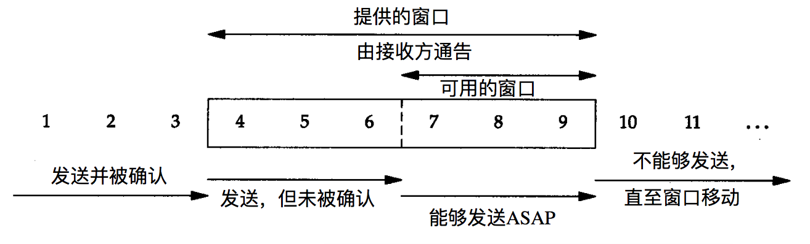

网络
目录
术语
TCP（Transmission Control Protocol）
传输控制协议，基于连接的服务。
UDP（User Datagram Protocol）
用户数据报协议，无连接的服务。
IP（Internet Protocol）
Internet 协议，信息传递机制。
TCP
TCP 是一个流式设备，是一个虚拟的连接。从 TCP 建立连接开始，到连接正常结束，所有的数据应看成一个整体，它保证的是发送端发送的这个整体和接收端接收的整体是一致的。而直至 TCP 断开前，接收端是不知道发送端发送的是多大的数据，怎么改善的，还有多少数据。所以，在应用中，不应对 TCP 是如何交付数据存在假设。
滑动窗口

三次握手
四次挥手
TCP 与 UDP 的区别
基于连接与无连接
对系统资源的要求（TCP 较多，UDP 少）
- TCP 提供较复杂的连接状态、收发状态和超时重传等控制流程
- TCP 头部 20 字节比 UDP 的 8 字节多
UDP 程序结构较简单
因为流是连续、有序的，TCP 需要自行处理数据的成帧，而 UDP 每次接收一个数据包，保留报文边界。
流模式与数据报模式
- TCP 保证数据正确性，UDP 可能丢包
- TCP 保证数据顺序，UDP 不保证
TCP 使用滑动窗口协议进行流量控制
TCP 的逻辑通信通道是全双工的可靠信道，UDP 不可靠
TCP 连接为点到点，而 UDP 运行一对一，一对多，多对一和多对多的交互通信
UDP 适用于需要高速传输和对实时性要求较高的通信或广播，TCP 适用于偏重数据顺序和可靠性的场景。